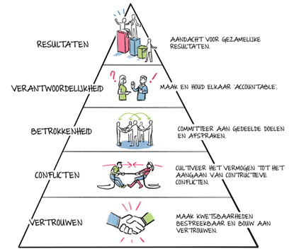
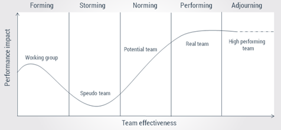
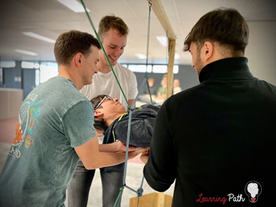

- Persoonlijke ontwikkeling
POP-sessie: My Team and I
-

19 oktober 2022

Corda Campus

3u

-
Op woensdag 19 oktober 2022 hebben een gedeelte van de studenten van het IT-Project een POP-sessie kunnen bijwonen genaamd “My Team and I”. Deze sessie, gericht op het versterken van de teamverbanden van de toen pas opgestelde teams voor het IT-Project van Hogeschool PXL, werd door Hogeschool PXL georganiseerd en gehouden op de Corda Campus door Carl Vlems en Jo Dens, de twee enthousiaste bezielers van de organisatie Learning Path dat trainingen en vormingssessies biedt aan de teams van bedrijven, projecten en organisaties.
De deelnemende studenten maakten allemaal deel uit van een project voor het vak “IT-Project”. Deze teams bestaan uit ongeveer 6 à 8 leden met als doel om hun verkozen project met succes af te ronden in de daarop volgende weken.
Het eerste deel van deze sessie werd ingevuld met een algemene kennismakingsrode waarin zowel de twee coaches van Learning Path als de studenten zichzelf konden voorstellen. In dit eerste deel werden de studenten ook begeleid in het proces van groepsvorming & -dynamica en teamwork. Hierbij werd uitleg gegeven aan de hand van de piramide van Lencioni. De groepen kregen de kans om in overleg te gaan met de onderlinge groepsleden om hun eigen belangen af te wegen en deze in de piramidediagram te verwerken. Achteraf werden de resultaten hiervan per groep vergeleken met de piramide van Lencioni. De verschillende elementen in deze piramide werden dan ook verder uitgelegd.
Ook aan valkuilen werd aandacht besteed. Zo werd er gesproken over verantwoordelijkheden, “free riding”, groepsdenken en nog andere topics die allemaal problemen veroorzaken voor de groepsdynamica en het functioneren van een team. De groepen kregen ook hierbij de kans om dit onderling te bespreken.
Randvoorwaarden, voorwaarden waaraan een team moet kunnen voldoen om goed en als één geheel te kunnen functioneren, werden ook besproken en uitgelegd door de coaches. Het gezamenlijk belang van de groep staat hierin centraal en werd ook bespreekbaar gemaakt, net zoals het kijken naar individuele belangen binnen de groep, onderlinge taakafhankelijkheid, motivatie, de omvang van het project en nog enkele andere voorwaarden.
Daarnaast werd ook het Tuckman-model besproken tijdens deze POP-sessie. De studenten werden door de verschillende fases van dit model begeleid en kregen hier per onderdeel ook informatie over. Er werd hierbij ook ruimte gehouden voor kritiek op dit model dat vooral van toepassing is voor groepen van een grotere omvang.
In het tweede deel van deze sessie dat direct na het eerste deel volgde, kregen de studenten de kans om verschillende challenges aan te gaan als groep. Deze challenges waren puzzels en obstakels waar men als groep kon aan werken om het probleem aan te pakken. Het doel was hierbij niet per se om een oplossing te bekomen voor de challenge maar eerder om elkaars functioneren binnen de groep via een hands-on experience te kunnen ervaren. Hierdoor kregen de teamleden feeling voor elkaars functioneren en methodes van werken. Het effectieve resultaat, het eindproduct waar deze challenges voor gedesignd zijn, is de betere groepsdynamica die hieruit voortgroeit.
Binnen het team waar ik als student deel van uitmaakte werden deze challenges goed aangepakt. Het team had ervoor gekoze om ondermeer de challenge uit te voeren die in Figuur 3 is afgebeeld. Daarnaast heeft het team ook de aandacht geworpen op één van de moeilijkere puzzelchallenges, een opdracht die enkele leden binnen de groep erg graag wilden doen. In het begin van deze opdracht was niet iedereen even enthousiast maar met de juiste planning en aanpak bracht uiteindelijk iedereen wel zijn of haar beste zelf naar de groep.
Op het einde van de sessie kregen de studenten ook enkele minuten de tijd om een eigen “groepshuis” te tekenen met daarin voorkomend de verschillende en meest belangrijkste waardes van het team. Deze werden door mijn team daar eerder symbolisch in verwerkt. Als resultaat heeft het team en de individuele daarvan zich beter kunnen ontplooien en zich aan elkaar bloot kunnen stellen betreffende individuele belangen, het eigen functioneren en ideaalbeelden. Dat daarbij tijdens deze sessie al enkele struikelblokken naar boven kwamen, zoals de individuele interesses van de challenges, heeft enkel voor een positieve kickstart van de groep en haar dynamica gezorgd.
Terugkijkend op deze sessie ben ik blij dat ik deze heb mogen bijwonen met de groep waarvan ik deel uitmaakte. Ik moet hierbij eerlijk zijn; vooraf was ik eerder twijfelachtig en onzeker over de waarde van teamwork sessies. Voorafgaand had ik regelmatig de gedachte dat gelijkaardige uitleg eerder abstract en zelfs waardeloos is, en dat gelijkaardige fysieke challenges ook eerder te speels en kinderachtig zijn.
Toch heeft deze ervaring mij het tegendeel bewezen en aangeleerd. De verschillende gesprekken die mijn groep in het eerste deel van deze sessie heeft kunnen doorgaan, waarbij veel verschillende meningen en gedachten werden gewisseld, onderbouwd en uitgelegd, hebben voor mij persoonlijk en wellicht voor verschillende andere teamleden voor een beter onderling begrip gezorgd. Daarnaast heeft de informatie die tijdens deze POP-sessie werd overgedragen van de coaches naar mijzelf en de andere studenten mij ook aan het denken doen zetten betreffende mijn eigen functioneren in de groep. Het triggerede een zelfreflectiemoment in mijzelf waaruit ik heb geleerd dat ik bij voorgaande projecten toch ook zelf heel wat had kunnen doen om de groepsdynamica te versterken, zelfs al was ik toen vaak de persoon die het zware werk in eigen handen nam. Communicatie is en blijft ten alle tijden van belang.
Dat ik in de toekomst een meer open mindset moet hebben tegenover dergelijke activiteiten en sessies zoals “My Team and I” is wellicht één van mijn grootste lessen uit deze sessie. Ongetwijfeld zal ik in mijn verdere carrière bij toekomstige werkgevers ook gelijkaardige groepsdynamicasessies kunnen bijwonen. In plaats van hier dan eerder negatief over te denken zal ik dat richting de toekomst eerder als een nieuwe kans zien om met nieuwe teamleden een sterke fundering voor groepsdynamica op te bouwen.
Ook tijdens en na de afloop van het IT-Project, nu enkele maanden later, heb ik het effectieve resultaat van deze sessie in de praktijk mogen beamen. Het team waarmee ik deze sessie heb mogen bijwonen, en waarmee ik het IT-Project heb mogen beleven, is een sterk en hecht team geworden, één waar ik een erg goede ervaring aan over heb gehouden. Ongetwijfeld komt dat gedeeltelijk door de sessie “My Team and I” die heeft gezorgd voor een vroege opbouw van een sterk teamverband.
- Coaches van LearningPath
-
CARL VLEMS

-
JO DENS